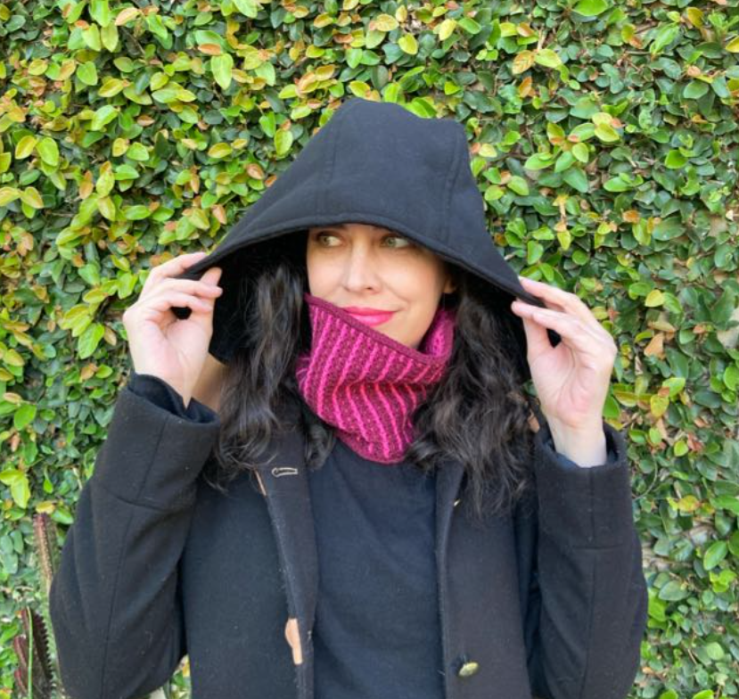

Traducción de patrones, edición técnica y testing — con ojo de artesana y corazón de creadora.
Lo que hago
Cada patrón merece ser claro, preciso y accesible para tejedoras de todo el mundo.
Traduzco tus patrones de crochet, amigurumi y tejido con terminología técnica precisa, respetando el estilo original y la claridad para artesanas de habla hispana e inglesa.
Reviso la consistencia técnica de tus patrones: puntos, abreviaciones, instrucciones y diagramas. Me aseguro de que todo funcione antes de publicar.
Tejo tus patrones paso a paso, verificando que las instrucciones sean claras y el resultado sea el esperado. Feedback detallado con fotos del proceso.
Si tenés un proyecto particular en mente — terminología especializada, plazos ajustados o formatos específicos — hablemos. Me adapto a lo que necesitás.

Sobre mí
Artista textil apasionada por el crochet, el amigurumi y el tejido. Combino mi amor por la artesanía con precisión técnica para ayudar a otras creadoras a compartir sus patrones con el mundo.
Trabajo en inglés y español, entendiendo las particularidades de cada idioma en el mundo del tejido.
Contacto
¿Tenés un patrón que necesita traducción, revisión o testing? Escribime y lo resolvemos.